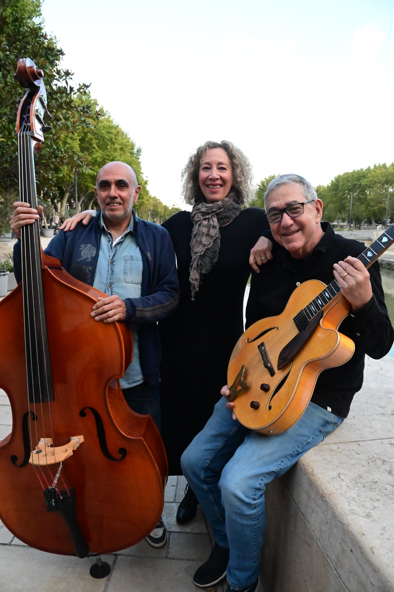
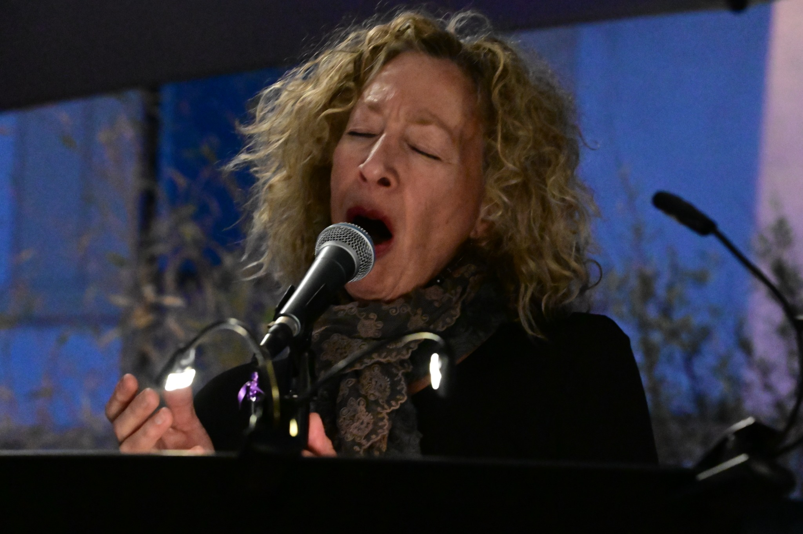
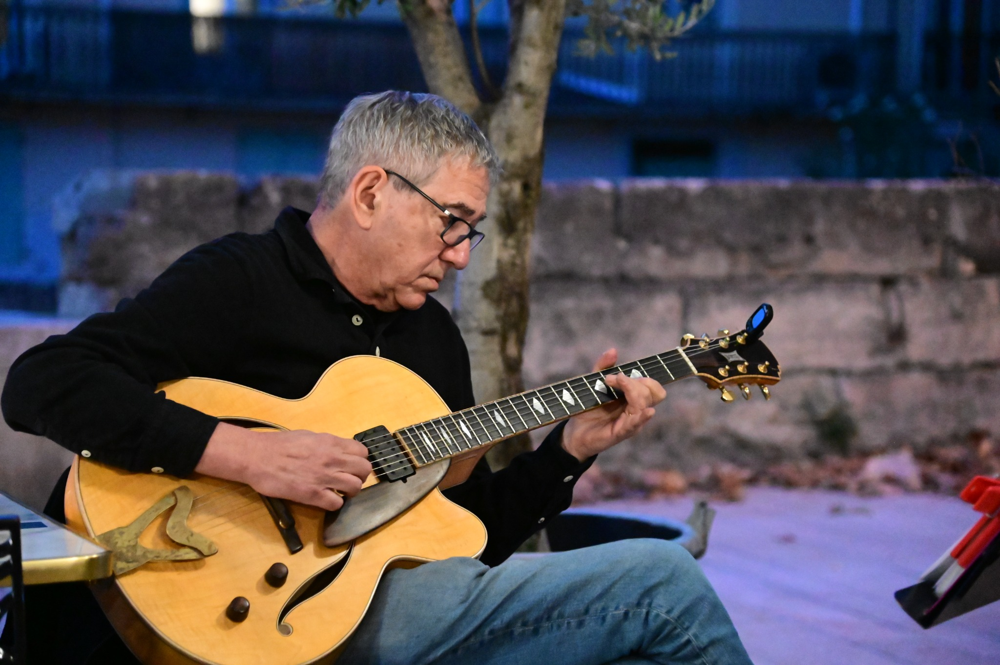
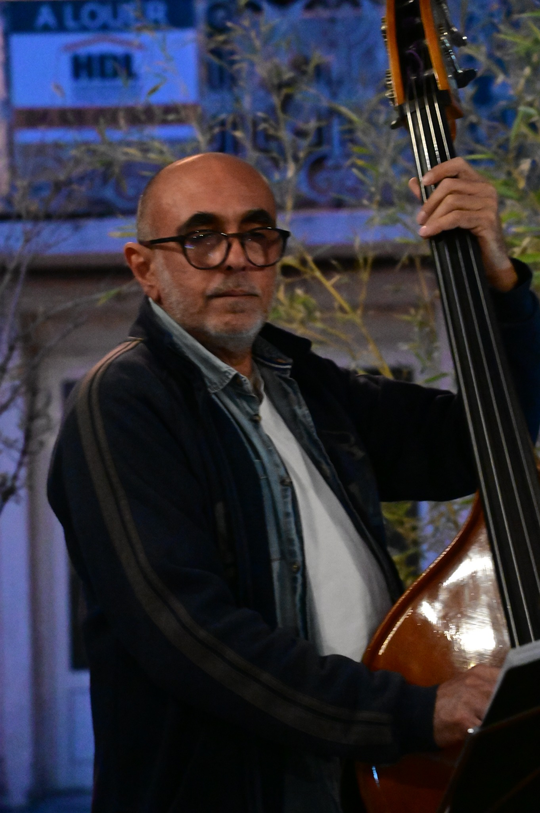
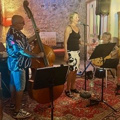
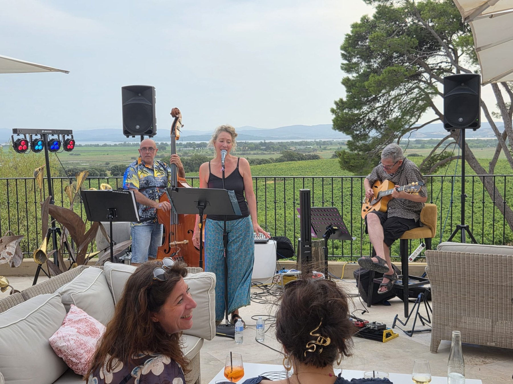
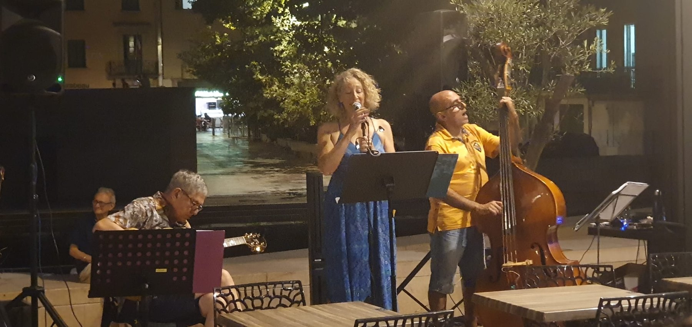
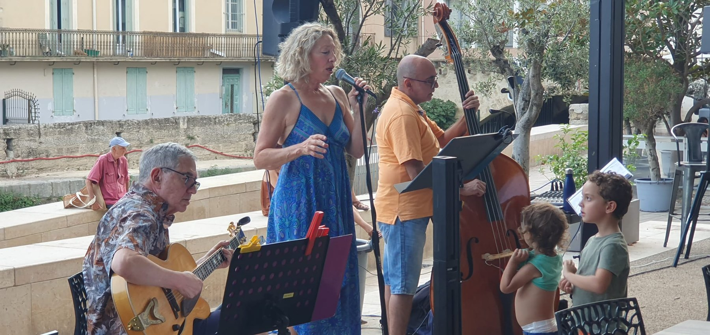
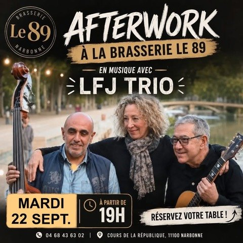
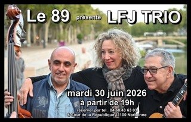

LE TRIO
LFJ Trio
Une formation élégante et complice pour bars à vin, restaurants, hôtels, concerts intimistes et événements privés en Occitanie.
NARBONNE · OCCITANIE
Jazz · Soul · Chanson française
Une voix, une guitare, une contrebasse. Des standards revisités avec élégance et simplicité.

Un trio acoustique qui revisite avec sensibilité les grands standards du jazz, les chansons françaises intemporelles et les mélodies soul. Une musique vivante, subtile et chaleureuse, pensée pour être écoutée autant que partagée.
Une formation élégante et complice pour bars à vin, restaurants, hôtels, concerts intimistes et événements privés en Occitanie.

Voix / Vocals
Une voix expressive et sensible, au cœur de l'identité musicale du trio.

Guitare / Guitar
Une guitare jazz chaleureuse et subtile qui apporte swing, couleurs harmoniques et finesse.

Contrebasse / Double bass
Une contrebasse profonde et souple qui ancre le trio avec élégance et présence.
Un voyage musical entre standards américains, soul et incontournables de la chanson française.
Découvrez notre univers musical dans ce montage audio de près de trois minutes.
Une sélection de notre répertoire. Le programme s'adapte à chaque événement.
Quelques images du trio, entre intimité, expression et présence scénique.






La meilleure musique est celle qui transforme un instant en souvenir.LFJ TRIO
Vous recherchez une ambiance musicale élégante pour votre établissement ou votre événement ? LFJ Trio propose un répertoire de jazz, soul et chanson française adapté à toutes les occasions. Contactez-nous pour discuter de votre projet.
Une date ou un événement en tête ? Contactez LFJ Trio pour discuter des disponibilités et des conditions.
Lorraine Garville-Bowes
monalisa.1lc@icloud.com Écrire à Lorraine Également sur Facebook ↗